MBG4181 Biyolojik Veri Analizi ve Görüntüleme - Ders7
2026-11-09
Ortak fikir: veriyi tidy formata çevir, dplyr fiilleriyle veriyi işle, birbirine eklenen parçalar şeklinde analiz.
Biyolojik veri iki biçimde gelir:
unvotes,gapminder verileri)Bugün iki gerçek veri setiyle çalışacağız:
| Veri | Ne? | Boyut |
|---|---|---|
| PubMed özetleri | EGFR + akciğer kanseri literatürü | 612 özet (2015–2026) |
| İnsan PPI ağı | protein–protein etkileşimleri | 544.494 etkileşim, 19.162 protein |
tidytext hakkında eski ders notları: link
tidygraph hakkında eski ders notları: link
{tidytext} ile metni tabloya çeviriyoruz.
Bir özet aslında bir kelime torbası. {tidytext} bunu “bir satır = bir (belge, kelime)” tablosuna çevirir.
Metin verisi de tıpkı tablo verisi gibi tidy: her satır tek bir gözlem.
# A tibble: 8 × 2
line word
<dbl> <chr>
1 1 egfr
2 1 mutations
3 1 drive
4 1 non
5 1 small
6 1 cell
7 1 lung
8 1 cancer Her metinde aynı “gürültü” kelimeleri var: the, and, of, in…
{tidytext} bir stop words sözlüğü ile gelir; anti_join() ile atarız.
anti_join() = “bu sözlükteki kelimeleri at”.
Özetleri PubMed’den indirdik. İndirme kodu data/fetch_pubmed.R dosyasında:
base_query <- 'EGFR[tiab] AND lung[tiab]'
years <- 2015:2026
per_year <- 60
pmids <- map(years, function(y) {
url <- paste0("https://eutils.ncbi.nlm.nih.gov/entrez/eutils/esearch.fcgi",
"?db=pubmed&retmode=json&retmax=", per_year,
"&term=", URLencode(paste0(base_query, " AND ", y, "[dp]")))
fromJSON(url)$esearchresult$idlist
})Sonra efetch ile özet metinleri indirilir, map_dfr() ile tabloya çevrilir.
# A tibble: 612 × 5
pmid year journal title abstract
<dbl> <int> <chr> <chr> <chr>
1 26051236 2015 The Lancet. Oncology Clin… "Most p…
2 25923549 2015 The New England journal of medicine AZD9… "The EG…
3 25589191 2015 The Lancet. Oncology Afat… "We aim…
4 25936890 2015 Zhongguo fei ai za zhi = Chinese journal of lu… [TKI… "Epider…
5 25745851 2015 Respiratory investigation Dise… "A rece…
6 25983263 2015 Archives of toxicology Role… "Lung c…
7 26514492 2015 Asian Pacific journal of cancer prevention : A… Corr… "Epider…
8 26022942 2015 Molecular aspects of medicine Targ… "The de…
9 25908911 2015 Current oncology (Toronto, Ont.) Mana… "Target…
10 25870795 2015 Translational lung cancer research Mole… "Somati…
# ℹ 602 more rowsBeş sütun: pmid, year, journal, title, abstract.
Her yıl en fazla 60 özet: yıllar arası karşılaştırma dengeli bir veriyle yapılsın diye.
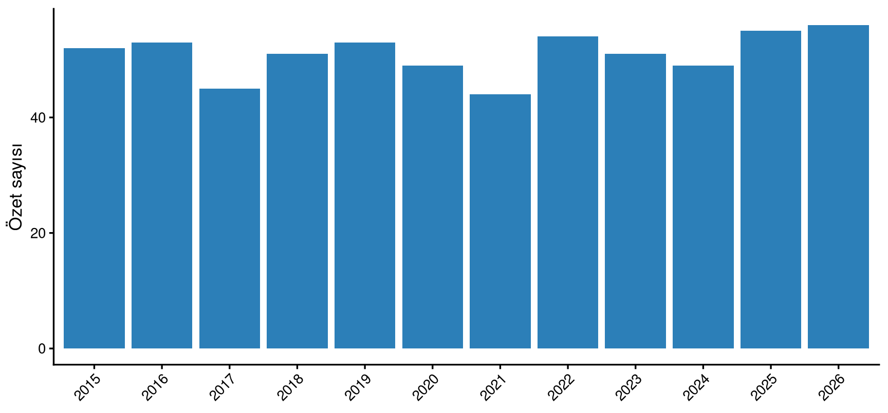
# A tibble: 10 × 2
word n
<chr> <int>
1 egfr 3983
2 lung 1640
3 cancer 1292
4 patients 1176
5 mutations 931
6 nsclc 892
7 cell 794
8 resistance 640
9 treatment 633
10 mutation 603egfr, lung, cancer … korpusun konusu burada çıkıyor.
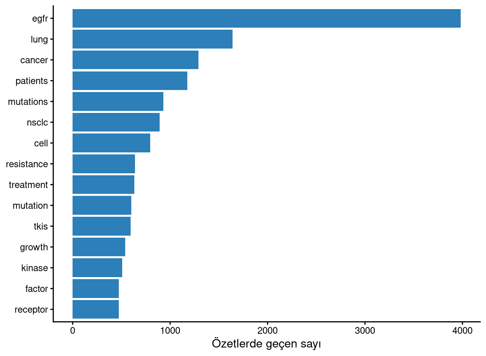
Sadece kelime saymak yetmez: hangi terim hangi yıl itibarıyla öne çıktı?
terms <- c("osimertinib", "gefitinib", "erlotinib",
"immunotherapy", "single-cell", "ctdna")
n_per_year <- corpus |> count(year)
trend <- map_dfr(terms, function(tm) {
corpus |>
mutate(hit = grepl(paste0("\\b", tm, "\\b"), tolower(paste(title, abstract)))) |>
group_by(year) |>
summarise(n = sum(hit), .groups = "drop") |>
mutate(term = tm, pct = 100 * n / max(n_per_year$n))
}) |>
mutate(term = factor(term, levels = terms))Osimertinib yükseliyor, gefitinib/erlotinib düşüyor, immunotherapy ve single-cell son yıllarda beliriyor.
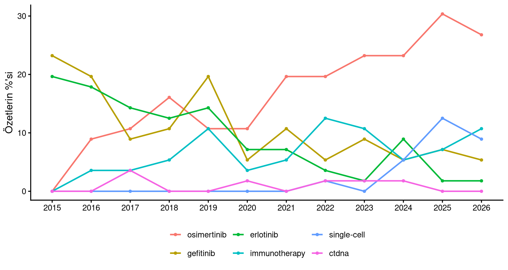
Aynı analizi 6 terim için yaptık. Bu “tekrar eden iş” tipik bir purrr işidir:
map() → listedeki her eleman için sonuç listesimap_dfr() → sonuçları tek tabloya birleştirirmap_dfr() fonksiyonunu ilk kez data/fetch_pubmed.R içinde kullandık (yıl yıl PubMed sorgusu).
Tek kelime yetmez: “lung cancer”, “EGFR mutation”, “tyrosine kinase” gibi ifadeler birlikte anlamlıdır.
bigrams <- corpus |>
unnest_tokens(bigram, abstract, token = "ngrams", n = 2) |>
separate_wider_delim(bigram, delim = " ", names = c("word1", "word2")) |>
anti_join(stop_words, by = c("word1" = "word")) |>
anti_join(stop_words, by = c("word2" = "word")) |>
filter(!is.na(word1), !is.na(word2)) |>
count(word1, word2, sort = TRUE)
bigrams |> slice_head(n = 10)anti_join() burada tek kelimeye yetmez: iki kelimeyi separate() ile ayırıp ikisini de temizliyoruz.
# A tibble: 10 × 3
word1 word2 n
<chr> <chr> <int>
1 lung cancer 965
2 cell lung 424
3 growth factor 410
4 egfr tkis 396
5 factor receptor 394
6 epidermal growth 385
7 tyrosine kinase 368
8 egfr mutations 346
9 receptor egfr 323
10 egfr mutant 299\[idf(\text{terim}) = \ln{\left(\frac{n_{\text{belge}}}{n_{\text{terimi içeren belge}}}\right)}\]
Gerçek hayatta gürültü olur
tf-idf nadir kelimeleri öne çıkarır; küçük veri kümelerinde bu “nadir” kelimeler bazen yazar adı ya da kısaltma olur. Bu yüzden filtreleme (n >= 3, en az 5 harf) şart.
{tidygraph} ile ilişkileri grafiğe çeviriyoruz.
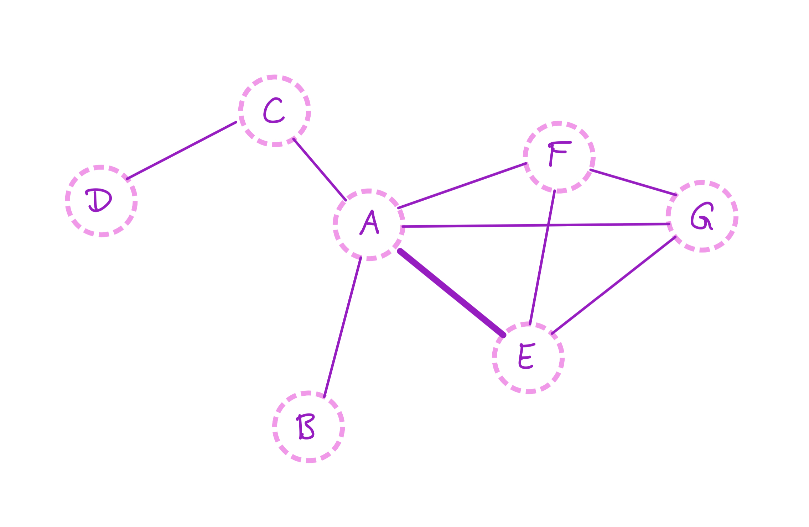
Soldaki iki düğüm arasına, sağdaki gibi bir kenar (bağ) çizilir.
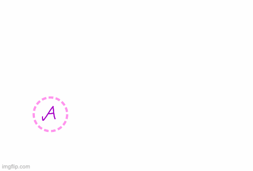
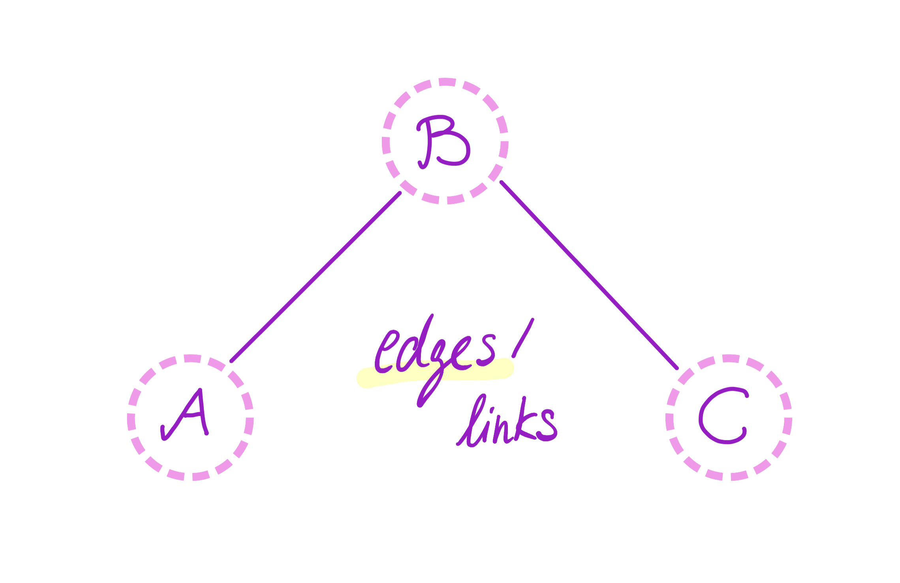
{tidygraph} bir grafiği iki tablo ile tutar: düğümler ve kenarlar. İkisi de {dplyr} fiilleriyle işlenir.
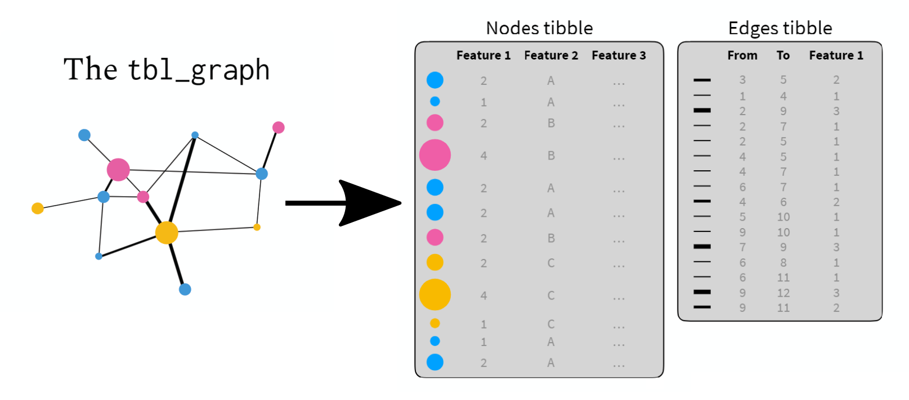
Küçük bir ağla başlayalım (arkadaşlık = yönsüz).
# A tibble: 9 × 2
person1 person2
<chr> <chr>
1 alice bob
2 charles bob
3 david bob
4 bob allen
5 fiona bob
6 gary bob
7 bob henry
8 alice allen
9 david fiona # A tbl_graph: 8 nodes and 9 edges
#
# An undirected simple graph with 1 component
#
# Node Data: 8 × 1 (active)
name
<chr>
1 alice
2 charles
3 david
4 bob
5 fiona
6 gary
7 allen
8 henry
#
# Edge Data: 9 × 2
from to
<int> <int>
1 1 4
2 2 4
3 3 4
# ℹ 6 more rows{ggraph} = {ggplot} mantığı, ama x/y yerine düğüm ve kenar bilgisi.
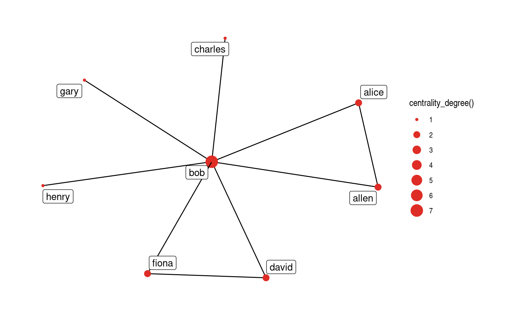
Bir düğümün kaç kenarı var? (Yönsüz ağda “kaç kişiyle bağlantılı”)
# A tibble: 8 × 2
name deg
<chr> <dbl>
1 bob 7
2 alice 2
3 david 2
4 fiona 2
5 allen 2
6 charles 1
7 gary 1
8 henry 1Yönlü ağda ayrım önemlidir:
Varsayılan yön out’tur. Yönlü/ yönsüz kararını verirken bunu unutmayın.
# A tibble: 5 × 2
interactor_A interactor_B
<chr> <chr>
1 MAP2K4 FLNC
2 MYPN ACTN2
3 ACVR1 FNTA
4 GATA2 PML
5 RPA2 STAT3 İki sütun: interactor_A, interactor_B. Kısaltılmış protein adları (UniProt/S_HUMAN). Tablo 19.162 protein / 544.494 etkileşim: çok büyük, bu yüzden sonraki adımlarda alt küme alacağız.
Düğüm (protein): Kenar (etkileşim): as_tbl_graph() iki sütunlu tabloyu alır, düğüm + kenar tablosuna çevirir.
Derecesi en yüksek proteinler ağın hub’larıdır.
deg_tbl |>
mutate(grp = if_else(name %in% c("EGFR", "TP53", "KRAS", "MYC", "ESR1", "ESR2"),
"Dersimizde gördüğümüz genler", "Diğer proteinler")) |>
slice_head(n = 15) |>
ggplot(aes(deg, fct_reorder(name, deg), fill = grp)) +
geom_col() +
scale_fill_manual(values = c("Diğer proteinler" = "#74c476",
"Dersimizde gördüğümüz genler" = "#de2d26")) +
labs(x = "Derece (etkileşim sayısı)", y = NULL, fill = NULL) +
theme_classic(base_size = 13) +
theme(legend.position = "bottom")Veri kalitesi notu
PLEKHA4, KIAA1429 gibi çok etkileşime giren proteinler, çoğu zaman çok sayıda düşük güvenli etkileşimin birikmesidir. “Hub” olmak biyolojik bir üstünlük değil, bazen bir veri özelliğidir.
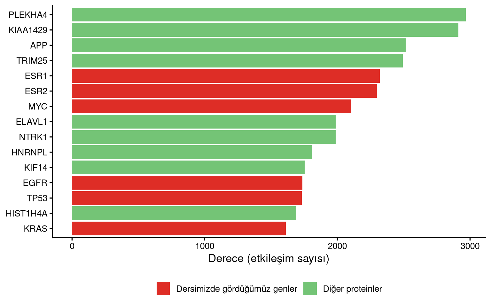
EGFR’nin ağda 1583 etkileşim ortağı var. Görünür kılmak için en yoğun 20’sini alıp bu düğümler arasındaki kenarları çizdik.
nbr <- ppi |>
filter(interactor_A == "EGFR" | interactor_B == "EGFR") |>
mutate(other = if_else(interactor_A == "EGFR", interactor_B, interactor_A)) |>
distinct(other) |>
pull(other)
ego_set <- c("EGFR", deg_tbl |> filter(name %in% nbr) |>
slice_head(n = 20) |> pull(name))
ego_edges <- ppi |>
filter(interactor_A %in% ego_set & interactor_B %in% ego_set) |>
distinct()ego_tbl |>
ggraph(layout = "kk") +
geom_edge_link(colour = "grey70") +
geom_node_point(aes(size = deg, colour = name == "EGFR")) +
scale_colour_manual(values = c("TRUE" = "#de2d26",
"FALSE" = "#3182bd"), guide = "none") +
geom_node_label(aes(label = name,
fontface = if_else(name == "EGFR", "bold", "plain")),
repel = TRUE, segment.colour = "grey70") +
theme_graph()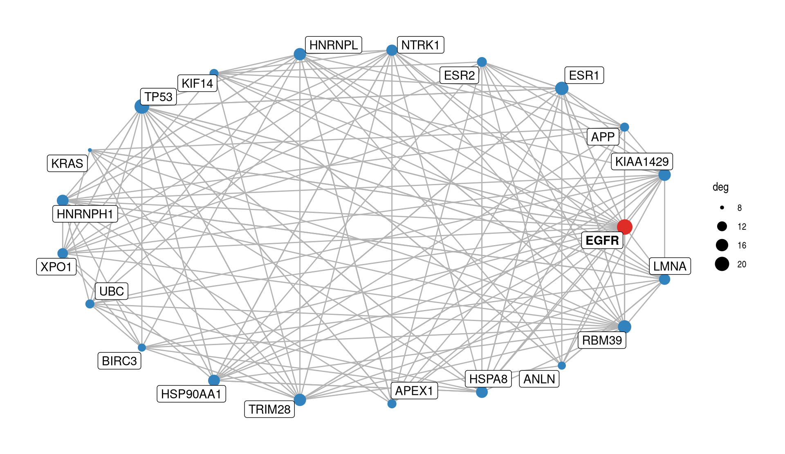
Derece “çok kapısı var” demektir. Betweenness ise “ağın ortasında mı?”: en kısa yolların kaçından geçiyor.
# A tibble: 6 × 3
name deg betw
<chr> <dbl> <dbl>
1 EGFR 23 15.1
2 TP53 21 8.54
3 RBM39 18 7.57
4 KIAA1429 16 6.77
5 TRIM28 16 5.38
6 HNRNPL 16 5.32EGFR bu ağda en yüksek betweenness’e sahip: yollar onun üzerinden geçiyor.
Ağdan biyolojiyi nasıl okuruz? Bilinen bir yolun proteinlerini seçip alt grafiği çıkarıyoruz: sıralama bizim bilgimizden, kenarlar PPI verisinden.
katman <- tibble(
name = c("EGFR","GRB2","SOS1","KRAS","NRAS","HRAS","RAF1","BRAF",
"MAP2K1","MAP2K2","MAPK1","MAPK3"),
sira = c(1,2,3,4,4,4,5,5,6,6,7,7),
y = c(0,0,0, 1,0,-1, 0.5,-0.5, 0.5,-0.5, 0.5,-0.5)
)
kaskad_ed <- ppi |>
filter(interactor_A %in% katman$name, interactor_B %in% katman$name) |>
distinct() |>
mutate(ka = katman$sira[match(interactor_A, katman$name)],
kb = katman$sira[match(interactor_B, katman$name)],
from = if_else(ka < kb, interactor_A, interactor_B),
to = if_else(ka < kb, interactor_B, interactor_A),
tip = if_else(abs(ka - kb) == 1, "Kaskadın adımı", "Diğer etkileşim")) |>
filter(ka != kb) |>
distinct(from, to, tip)kaskad_g <- tbl_graph(
nodes = katman,
edges = tibble(from = match(kaskad_ed$from, katman$name),
to = match(kaskad_ed$to, katman$name),
tip = kaskad_ed$tip),
directed = TRUE
)
kaskad_g |>
ggraph(layout = "manual", x = katman$sira, y = katman$y) +
geom_edge_link(aes(edge_colour = tip), arrow = arrow(length = unit(0.16, "cm"))) +
scale_edge_colour_manual(values = c("Kaskadın adımı" = "#de2d26",
"Diğer etkileşim" = "#e6e6e6")) +
geom_node_point(size = 4.5, colour = "#3182bd") +
geom_node_text(aes(label = name), nudge_y = 0.16) +
labs(edge_colour = NULL) +
theme_graph() +
theme(legend.position = "bottom")Kırmızı kenarlar kaskadın ardışık adımları, gri kenarlar aynı proteinler arasındaki diğer etkileşimler. Yerleşimi elle verdik: düzen veriden gelmez, çizim tercihidir.
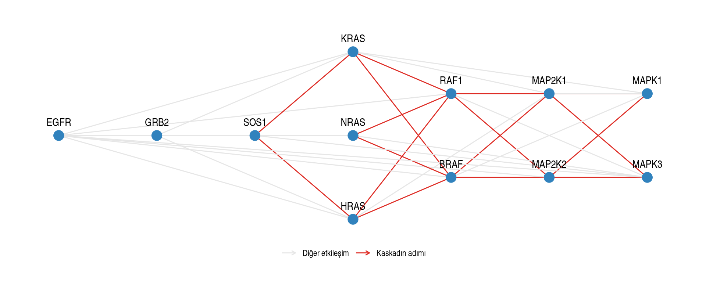
Ağın şekli veriden gelmez, çizim seçiminden gelir. En iyisi birkaçını denemektir.
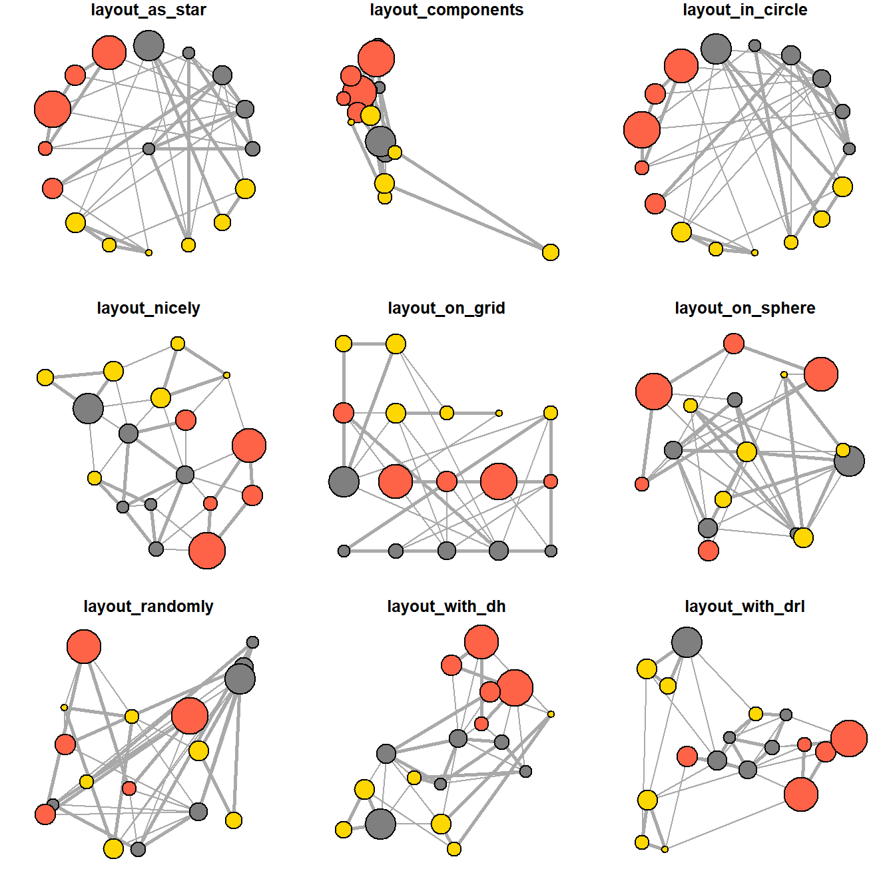
Aynı fikir, metin verisiyle.
Bigram sayımında elimizde word1, word2 ve bir sayı var. Bu tam olarak “iki düğüm + aralarındaki kenar” demek.
egfr düğümü merkezde: EGFR – TKI’lar, EGFR – mutasyonlar etrafında toplanıyor.
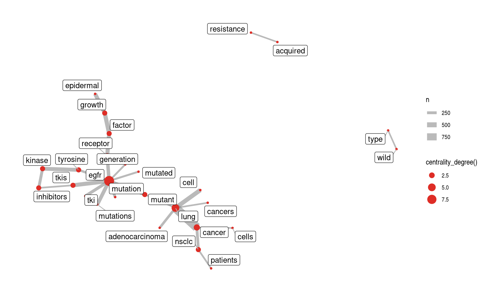
| Metin ağı | Protein ağı | |
|---|---|---|
| Düğüm | kelime | protein |
| Kenar | “bu kelime şu kelimeden sonra geçti” | “bu iki protein etkileşiyor” |
| Ağırlık | kaç kez geçti | kaç etkileşim |
| Merkezilik | en çok “köprü” kuran kelime | sinyal yolunun kilit geni |
Aynı araçlar, farklı alan.
Farklı paketlerin fonksiyonları tidy veri alıp tidy veri verir; bu yüzden uç uca takılırlar.
corpus |> # veri
unnest_tokens(word, abstract) |> # tidytext
anti_join(stop_words, by = "word") |> # dplyr
count(year, word) |> # dplyr
filter(n > 5) |> # dplyr
pivot_wider(names_from = word, values_from = n) |> # tidyr
as_tbl_graph(directed = FALSE) |> # tidygraph
activate(edges) |>
mutate(betw = centrality_edge_betweenness()) |> # tidygraph
ggraph(layout = "kk") + # ggraph
geom_node_point() + # ggraph
geom_edge_link() # ggraphcorpus içinde 2015 yılı özetlerini alın; en sık 10 kelimeyi bulun.trend tablosundan 2020 yılında en yüksek terimi bulun; o terimin yıllar boyunca yüzdelerini çizdirin.ppi_g içinde “EGFR” düğümünü bulun; derecesini ve kaç komşusu olduğunu yazdırın.bigrams içinden “egfr” kelimesini içeren 10 ikili kelime çıkarın.Poster için veriyi nereden çekeceksiniz? Ücretsiz ve programatik (R ile okunabilen) kaynaklar:
| Kaynak | Ne verir? | Adres |
|---|---|---|
| NCBI GEO | ekspresyon / dizileme verisi | ncbi.nlm.nih.gov/geo |
| Ensembl | gen, transkript, genom koordinatı | ensembl.org |
| UniProt | protein dizisi ve fonksiyon | uniprot.org |
| EMBL-EBI | etkileşim ağları (IntAct) | ebi.ac.uk/intact |
| PubMed E-utilities | özet metni | ncbi.nlm.nih.gov |
Bu kaynakların hepsinde JSON/XML/TSV indirme var: download.file() + readr ile okunur. Ödevinizde yaptığınız gibi veriyi indirip kaydedin, sonra analiz edin.
Sonraki ders: Quarto ile Raporlama — analizi poster/rapor hâline getiriyoruz.